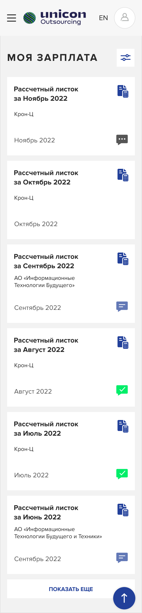

Unicon Outsourcing
Веб- и мобильный кабинет сотрудника: кадровые заявки, зарплата, документы, отпуска и учёт рабочего времени.



Личный кабинет как система кадровых процессов
- Моя роль
- UX/UI-дизайнер
- Масштаб работы
- Веб- и мобильные сценарии для сотрудников и руководителей: заявки, зарплата, документы, отпуска и учёт времени.
Контекст проекта
Unicon Outsourcing — личный кабинет для взаимодействия сотрудника с кадровыми и расчётными процессами. В одном интерфейсе собраны рабочие задачи, заявления, расчётные листки, документы и планирование времени.
Проектировала связанные сценарии для разных ролей: сотрудник подаёт заявку и отслеживает её состояние, руководитель рассматривает обращения команды и работает с графиками. Веб- и мобильная версии сохраняют общую структуру и терминологию.
Главная и активные задачи
На главной собраны действия, которые требуют внимания пользователя: согласовать, подписать, принять решение. Проработала сортировку, фильтры и цветовое обозначение состояний — черновик, рассматривается, согласовано и отклонено.
Личные заявки отделены от заявок сотрудников. Для работы с несколькими организациями предусмотрен выбор организации клиента: пользователь понимает, в каком контексте выполняет действие.
Полный путь кадровой заявки
Проработала создание, заполнение и просмотр заявки, ошибки в форме, подтверждение действия и историю обращения. Для командировок предусмотрен отзыв ранее поданной заявки.
- Изменение персональных данных: ФИО, телефон, фактический адрес и банковские реквизиты; отдельные режимы редактирования и просмотра.
- Работа в выходные и праздники: сценарии сотрудника и менеджера до и после отправки.
- Отпуска и отсутствие: график отпусков, больничный и отсутствие в связи со сдачей крови.
- Заявление в свободной форме: общий путь для обращения, которое не укладывается в типовой шаблон.
Для каждой формы важны не только поля, но и переходы между этапами: что можно изменить, что уже отправлено и где посмотреть историю.
Зарплата и обращения по начислениям
Спроектировала раздел «Моя зарплата»: выбор периода и фильтры, список расчётных листков и переход к подробностям. Вопрос по начислениям связан с конкретным расчётным листком, чтобы сотруднику не приходилось заново объяснять контекст.
Проработала раскрытие переписки, ответ на комментарий, загрузку продолжения обсуждения, закрытие обращения и возможность его продолжить. Таким образом раздел объединяет просмотр данных и диалог по ним.
Планирование отпусков
Разработала несколько представлений для управления графиками отпусков: список, диаграмму Ганта и тепловую карту. Они помогают по-разному рассматривать один процесс — от состояния конкретного графика до распределения отпусков команды по времени.
Учла отсутствие созданного графика, черновик, рассмотрение, согласование, обработку, отклонение и отзыв. Проработала фильтры, легенду, подсказки и активные состояния элементов.
Табель и индивидуальный график
Для табеля учёта рабочего времени спроектировала просмотр, работу с активной ячейкой и ввод времени за день. Проверка табеля различает успешный результат, расхождение часов и критичные ошибки.
Индивидуальный график связывает план на период с настройкой отдельного дня. Предусмотрены режимы редактирования и просмотра, а в списках — разделение активных документов и черновиков.
Документы, подпись и замещения
Проработала локальные нормативные документы на ознакомление и уже ознакомленные, документы по трудовой деятельности на подпись и подписанные. В архиве предусмотрены кадровые документы и документы, подписанные от имени работодателя.
Сценарий регистрации замещения включает список, фильтры и создание записи. Уведомления помогают перейти к задачам, которые требуют реакции, а профиль собирает личную информацию сотрудника.
Мобильная версия
Спроектировала мобильные варианты главной, кадровых заявок, расчётных листков, документов, уведомлений, графиков отпусков и учёта рабочего времени.
Вместо широких списков и таблиц использовала последовательное расположение данных, карточки и отдельные действия. При этом сохраняла названия разделов, статусы и логику переходов: сотрудник может продолжить знакомую работу с телефона.
Для длинных форм и списков проработала выбор периода, фильтры, раскрытие подробностей и переход к действиям. Важна была доступность конкретной задачи — подать заявление, проверить начисления, согласовать или подписать документ.
Единое поведение интерфейса
Детализировала состояния компонентов и элементов списков: наведение, нажатие, выбор, активная строка, просмотр и редактирование. Общие правила для форм, статусов, фильтров и подтверждений связывают разные кадровые процессы в один продукт.